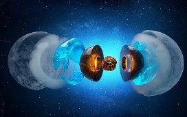

NETUNO
Netuno é o oitavo planeta a partir do Sol. É um gigante gasoso, bem como Júpiter, Saturno e Urano. Está distante 4,5 bilhões de quilômetros do Sol e demora 156 anos terrestres para completar uma órbita. Foi descoberto em 1846 e recebeu o nome do deus romano do mar.

CARACTERÍSTICAS
"Netuno é um planeta gasoso pertencente ao Sistema Solar classificado como um gigante de gelo. Trata-se do oitavo planeta a partir do Sol, sendo, portanto, o planeta mais distante do Sol. Em decorrência disso, o tempo que Netuno leva para dar uma volta completa em torno dessa estrela é muito grande: 165 anos. Já a sua rotação, que é o movimento que realiza em torno de seu próprio eixo, decorre em 16 horas, o que corresponde à duração de um dia completo em Netuno. O planeta Netuno é bastante frio, com temperaturas superficiais que variam entre médias de -200 e -215 °C, contrastando com seu núcleo, que chega a 5 mil graus Celsius."
DADOS GERAIS DE NETUNO
Diâmetro: 49.244 km.
Área da superfície: 7.618.272.763 km².
Massa: 1,024 × 1026 kg.
Densidade: 1,638 g/cm³./
Gravidade: 11,15 m/s².
Distância do Sol: 4,5 bilhões de quilômetros.
Satélite natural: 14 luas conhecidas.
Anéis:cinco anéis principais e quatro arcos de anéis.
Período de rotação: 16 horas.
Período de translação: 165 anos.
As luas de Netuno
O planeta Netuno possui 14 luas conhecidas, que são seus satélites naturais. Todas elas possuem nomes originários da mitologia grega e são classificadas em regulares e irregulares.
Luas regulares: aquelas que desempenham órbita elíptica no mesmo sentido que a trajetória de Netuno. São elas: Náiade, Galateia, Talassa, Despina, Larissa, Hipocampo, Proteu.
Luas irregulares: aquelas que apresentam órbita excêntrica e, em alguns casos, retrógrada, no sentido contrário à órbita do planeta. São elas: Tritão, Nereida, Halimede, Sao, Laomedeia, Psâmate, Neso.
Curiosidades
- O planeta Netuno, mesmo de dimensões significativas, é o menor em tamanho entre os planetas gasosos.
- A superfície de Netuno é gasosa. Portanto, ao se tentar pisar em Netuno, é impossível ficar de pé por causa de sua estrutura formada basicamente por gases.
- Em termos climáticos, Netuno é classificado pelos cientistas como o planeta mais frio do Sistema Solar, além de registrar os ventos mais fortes.
- Os nomes das 14 luas presentes em Netuno são uma homenagem ao conjunto de divindades da mitologia grega.
- A coloração azulada de Netuno é resultado da combinação de gases, como o hidrogênio, o hélio e metano, com as baixas temperaturas.

Material de Estudo